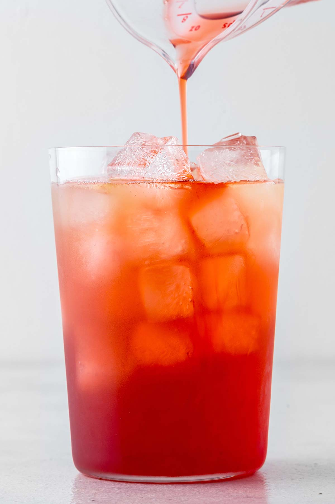

Iced Strawberry Green Tea

A fruity refreshing drink, perfect for an afternoon tea time. Enjoy with biscuits and good company.
Ingredients:
- 2 bags Green tea
- 2 tbsp Strawberry syrup
- 3/4 cup Ice
- 1/2 cup Hot water
Instructions:
- Heat water to steep green tea according to package instructions. Note that brewing green tea in too high water temperature causes the tea to be bitter.
- Fill glass with ice.
- After green tea steeps, add strawberry syrup to warm tea and pour over ice.
- Enjoy!